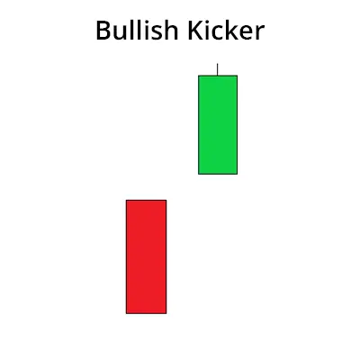

மகாவிலாசியாக கைசாலி முறைமை ஒரு வணிக முறைமையாகும், இது பங்கு சந்தையில் கீழ்வரும்
பாதிப்பை நிறுத்துகிறது மற்றும் மேல் செல்வதற்கு சுட்டியாக்குகிறது. இந்த முறைமை இரண்டு
மொழிகுகளால் உருவாகுகிறது. முதல் மொழிகு ஒரு கீழ்வரும் மொழிகு, இரண்டாம் மொழிகு
ஒரு மேல் மொழிகு, இது முதல் மொழிகுவின் உடலை முழுவதும் அணைக்கும் மற்றும் முதல்
மொழிகுவின் உயரத்தை மேலே செல்லும்.
மகாவிலாசியாகக் கைசாலியான முறைமை ஒரு பலமான மேல் பாதிப்பை அடைகின்றது.
இந்த முறைமையை கண்டால், பங்கு சந்தையில் உயர்வு நிலைக்கு வணிகம் செய்வது முடியும்.